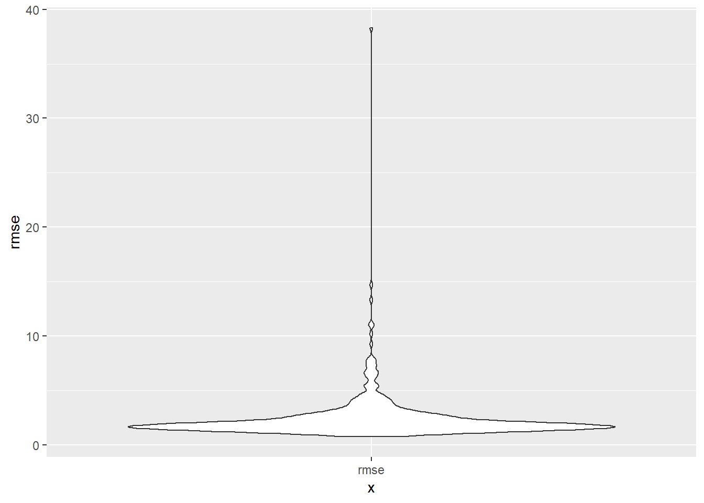
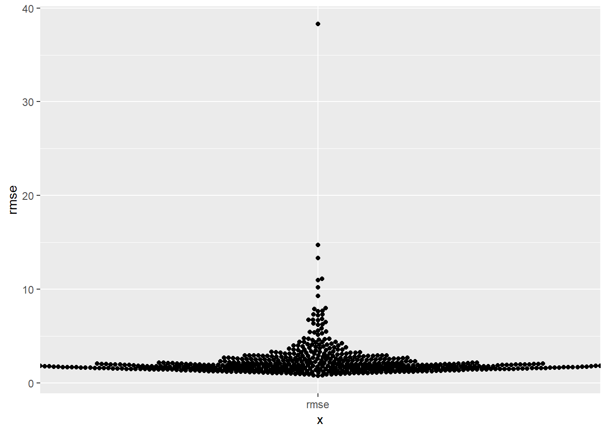
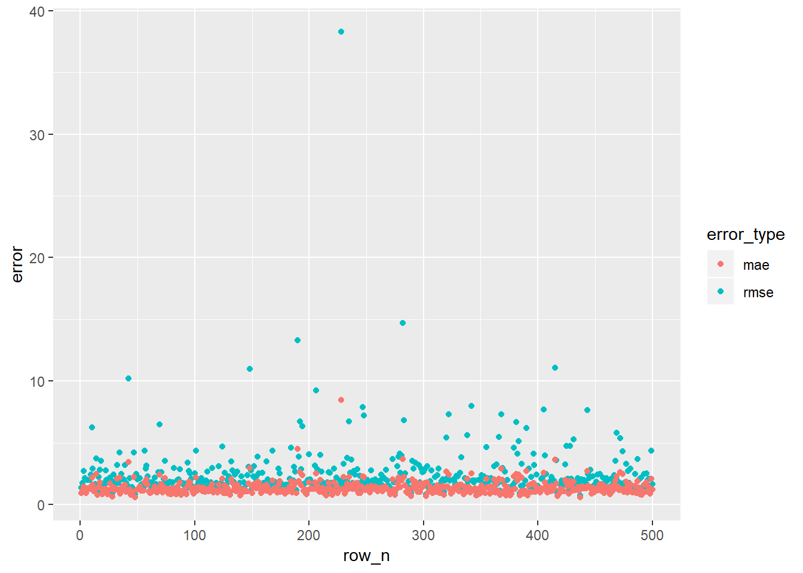
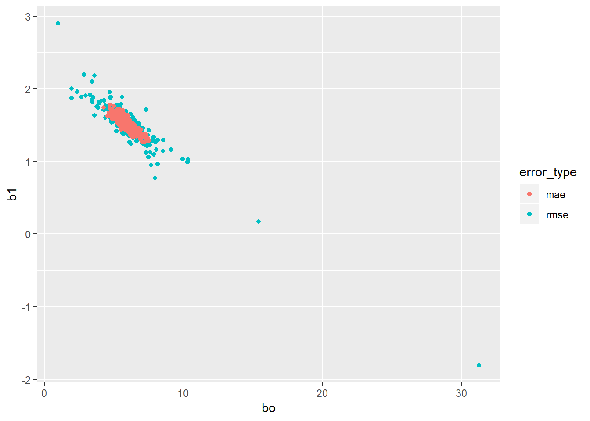
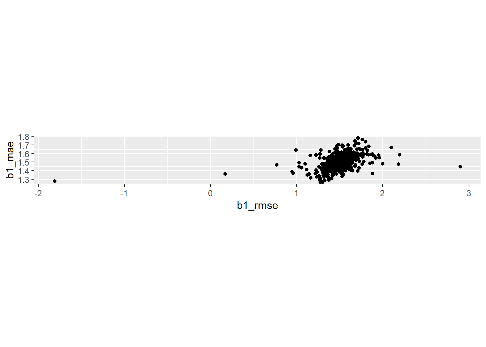
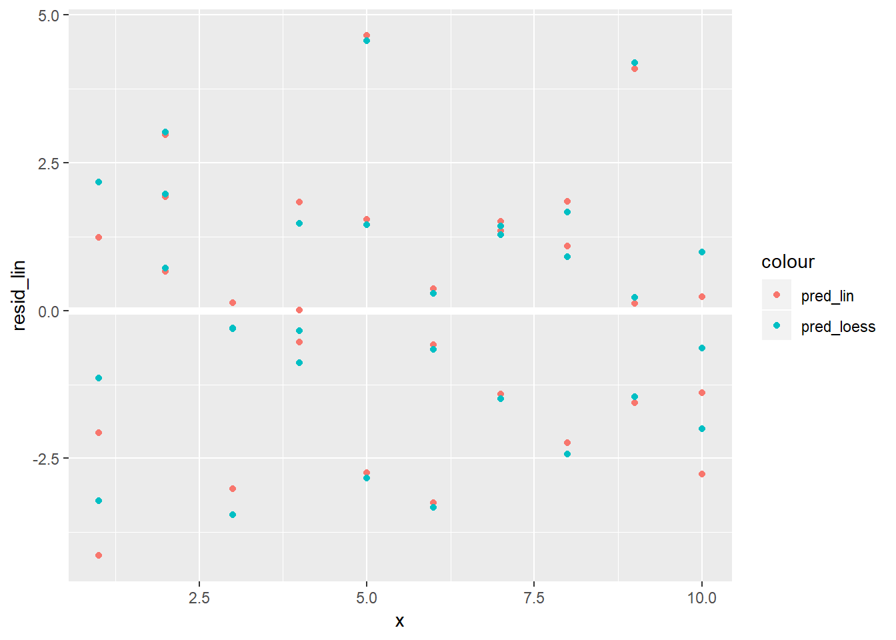
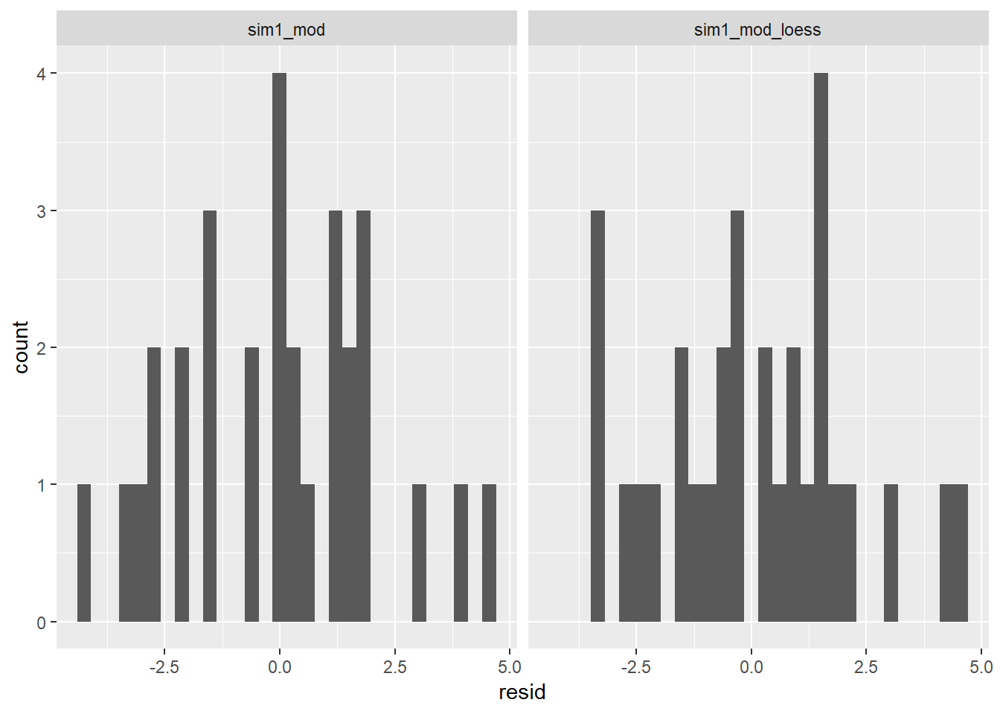
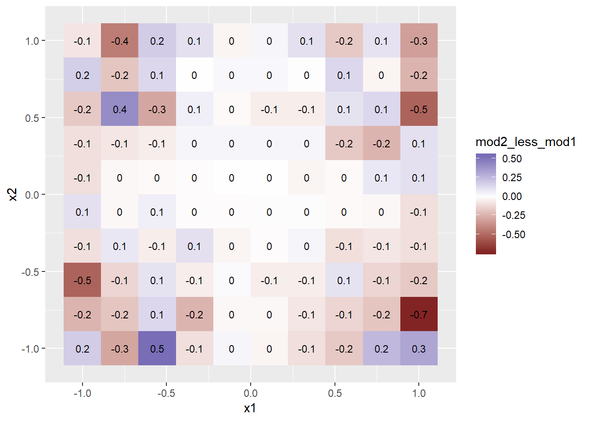
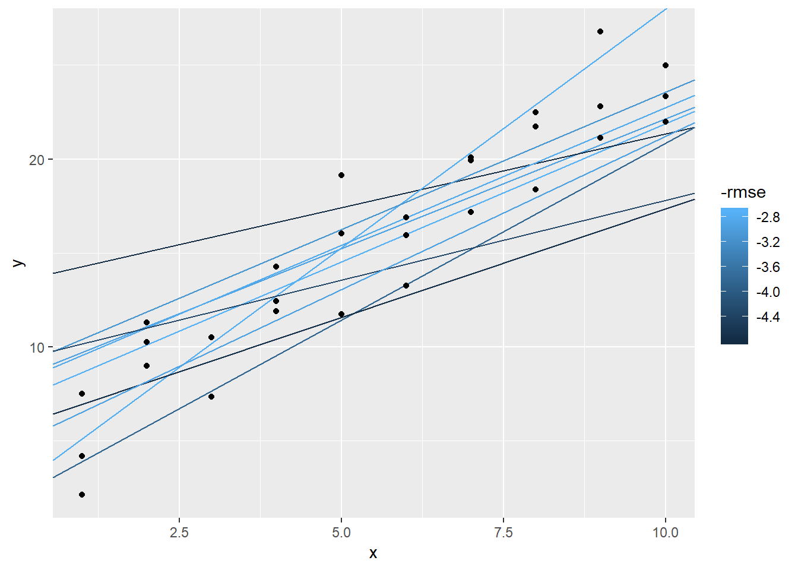
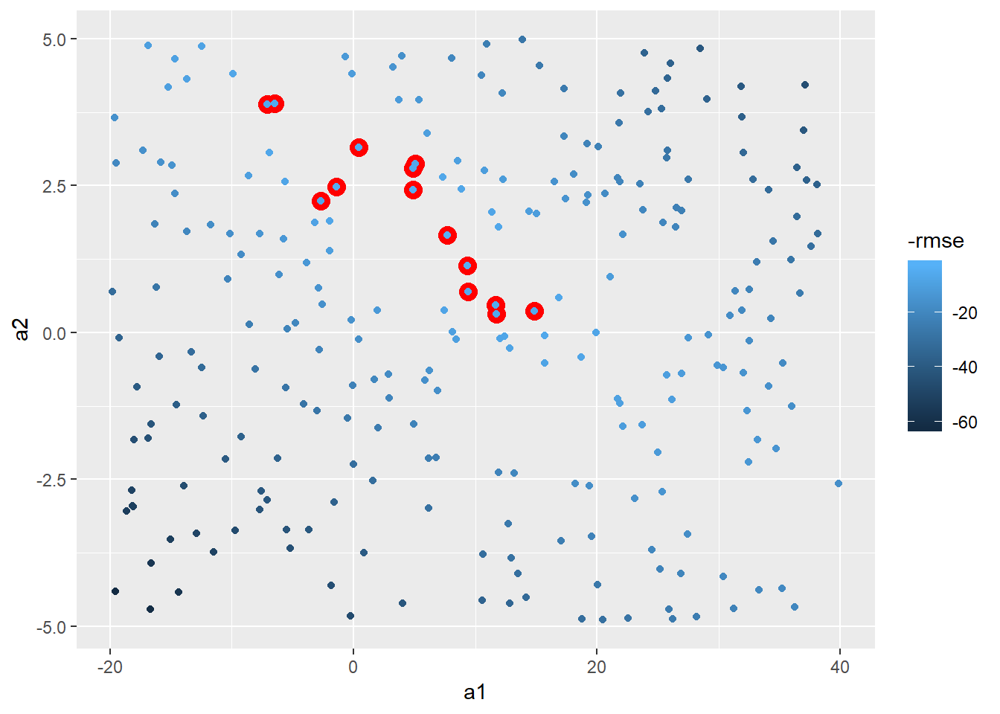

Ch. 23: Model basics
geom_ablinecreate line or lines given intercept and slopes, e.g.geom_abline(aes(intercept = a1, slope = a2), data = models, alpha = 1/4)optimgeneral purpose function for optimization using Newton-Raphson searchcoeffunction for extracting coefficients from a linear modelmodelr::data_grid, can be used to generate an evenly spaced grid of values that covers region where data lies29- First arg is dataframe, next args are variable names to build grid from
- when using with continuous data,
seq_rangeor similar can be a good complement, see30 for an example where this is used.
seq_range(x1, 5)takes 5 values evenly spaced within this set. Two other useful args:pretty = TRUE: will generate a “pretty sequence” ++seq_range(c(0.0123, 0.923423), n = 5, pretty = TRUE), 0, 0.2, 0.4, 0.6, 0.8, 1trim = 0.1will trim off 10% of tail values (useful if vars have long tailed distribution and you want to focus on values near center) +`expand = 0.1 is kind of the opposite and expands the range by 10%
modelr::add_predictionstakes a data frame and modle an adds predictions from the model to a new columnmodelr::add_residualsis similar to above but requires actual value be in dataframe so that residuals can be calculatedmodelr::spread_residualsandmodelr::gather_residualsallow you to do this for multiple models at once. equivalent are avaialble for*_predictionsas well.- use
model_matrixto see what equation is being fitted - To include all 2-way interactions can do something like this
model_matrix(sim3, y ~ (x1 + x2 + x3)^2)ormodel_matrix(sim3, y ~ (.)^2) - Use
I()inI(x2^2)to incorporate squared term or any transformation that includes+,-,*, or^ - Use
polyto include 1, 2, … n order terms associated with a variable, e.g.model_matrix(df, y ~ poly(x, 3)) splines::ns()represent safer alternative topolythat is less likely to become extreme, e.g.Interesting spline note31.
nobs(mod)see how many observations were used in model building (assuming ‘mod’ represents a model)- make dropping of missing values explicit with
options(na.action = na.warn)- to make silent in specific models use e.g.
mod <- lm(y ~ x, data = df, na.action = na.exclude)
- to make silent in specific models use e.g.
23.2: A simple model
23.2.1
One downside of the linear model is that it is sensitive to unusual values because the distance incorporates a squared term. Fit a linear model to the simulated data below, and visualise the results. Rerun a few times to generate different simulated datasets. What do you notice about the model?
generate n number of datasets that fit characteristics of sim1a
sim1a_mult <- tibble(num = 1:500) %>% rowwise() %>% mutate(data = list(tibble( x = rep(1:10, each = 3), y = x * 1.5 + 6 + rt(length(x), df = 2) ))) %>% #undoes rowwise (used to have much more of workflow with rowwise, but have #changed to use more of map) ungroup() plots_prep <- sim1a_mult %>% mutate(mods = map(data, ~lm(y ~ x, data = .x))) %>% mutate(preds = map2(data, mods, modelr::add_predictions), rmse = map2_dbl(mods, data, modelr::rmse), mae = map2_dbl(mods, data, modelr::mae)) plots_prep %>% ggplot(aes(x = "rmse", y = rmse))+ geom_violin()

- as a metric it tends to be more suseptible to outliers, than say mae
One way to make linear models more robust is to use a different distance measure. For example, instead of root-mean-squared distance, you could use mean-absolute distance:
measure_distance <- function(mod, data) { diff <- data$y - make_prediction(mod, data) mean(abs(diff)) }Use
optim()to fit this model to the simulated data above and compare it to the linear model.model_1df <- function(betas, x1 = sim1$x) { betas[1] + x1 * betas[2] } measure_mae <- function(mod, data) { diff <- data$y - model_1df(betas = mod, data$x) mean(abs(diff)) } measure_rmse <- function(mod, data) { diff <- data$y - model_1df(betas = mod, data$x) sqrt(mean(diff^2)) } best_mae_sims <- map(sim1a_mult$data, ~optim(c(0,0), measure_mae, data = .x)) best_rmse_sims <- map(sim1a_mult$data, ~optim(c(0,0), measure_rmse, data = .x))mae_df <- best_mae_sims %>% map("value") %>% transpose() %>% set_names(c("error")) %>% as_tibble() %>% unnest() %>% mutate(error_type = "mae", row_n = row_number()) rmse_df <- best_rmse_sims %>% map("value") %>% transpose() %>% set_names(c("error")) %>% as_tibble() %>% unnest() %>% mutate(error_type = "rmse", row_n = row_number()) bind_rows(rmse_df, mae_df) %>% ggplot(aes(x = row_n, colour = error_type))+ geom_point(aes(y = error))
- you can see the error for rmse seems to have more extreme examples
bind_rows(rmse_df, mae_df) %>% ggplot(aes(x = error_type, colour = error_type))+ ggbeeswarm::geom_beeswarm(aes(y = error))+ facet_wrap(~error_type, scales = "free_x")
- let’s look at differences in the coefficients produced
mae_df <- best_mae_sims %>% map("par") %>% transpose() %>% set_names(c("bo", "b1")) %>% as_tibble() %>% unnest() %>% mutate(error_type = "mae", row_n = row_number()) rmse_df <- best_rmse_sims %>% map("par") %>% transpose() %>% set_names(c("bo", "b1")) %>% as_tibble() %>% unnest() %>% mutate(error_type = "rmse", row_n = row_number()) bind_rows(rmse_df, mae_df) %>% ggplot(aes(x = bo, colour = error_type))+ geom_point(aes(y = b1))
- see more variability in the b1
- another way of visualizing the variability in coefficients is below
left_join(rmse_df, mae_df, by = "row_n", suffix = c("_rmse", "_mae")) %>% ggplot(aes(x = b1_rmse, y = b1_mae))+ geom_point()+ coord_fixed()
One challenge with performing numerical optimisation is that it’s only guaranteed to find one local optima. What’s the problem with optimising a three parameter model like this?
- the problem is that is that there are multiple “best” solutions in this example. a[1] and a[3] together represent the intercept here.
models_two <- vector("list", 2) model1 <- function(a, data) { a[1] + data$x * a[2] + a[3] } models_two[[1]] <- optim(c(0, 0, 0), measure_rmse, data = sim1) models_two[[1]]$par## [1] 4.219814 2.051678 -3.049197model1 <- function(a, data) { a[1] + data$x * a[2] } models_two[[2]] <- optim(c(0, 0), measure_rmse, data = sim1) models_two## [[1]] ## [[1]]$par ## [1] 4.219814 2.051678 -3.049197 ## ## [[1]]$value ## [1] 2.128181 ## ## [[1]]$counts ## function gradient ## 110 NA ## ## [[1]]$convergence ## [1] 0 ## ## [[1]]$message ## NULL ## ## ## [[2]] ## [[2]]$par ## [1] 4.222248 2.051204 ## ## [[2]]$value ## [1] 2.128181 ## ## [[2]]$counts ## function gradient ## 77 NA ## ## [[2]]$convergence ## [1] 0 ## ## [[2]]$message ## NULL
- a1 and a3 are essentially equivalent, so optimizes somewhat arbitrarily, in this case can see the a1+a3 in the 1st (when there are 3 parameters) is equal to a1 in the 2nd (when there are only two parameters)…
- it would be nice if this spit out a warning of colinearity or something…
23.3: Visualising models
23.3.3
Instead of using
lm()to fit a straight line, you can useloess()to fit a smooth curve. Repeat the process of model fitting, grid generation, predictions, and visualisation onsim1usingloess()instead oflm(). How does the result compare togeom_smooth()?sim1_mod <- lm(y ~ x, data = sim1) sim1_mod_loess <- loess(y ~ x, data = sim1) #Look at plot of points sim1 %>% add_predictions(sim1_mod, var = "pred_lin") %>% add_predictions(sim1_mod_loess) %>% add_residuals(sim1_mod_loess) %>% ggplot()+ geom_point(aes(x = x, y = y))+ geom_line(aes(x = x, y = pred_lin), colour = "dark green", alpha = 0.3, size = 2.5)+ geom_line(aes(x = x, y = pred), colour = "red", alpha = 0.3, size = 2.5)+ geom_smooth(aes(x = x, y = y), se = FALSE)
- For sim1, the default value for
geom_smoothis to use loess, os it is the exact same.geom_smoothwill sometimes use gam or other methods depending on data, note that there is also aweightargument that can be useful - this relationship looks pretty solidly linear
- below are some plots of the resids, just for kicks
sim1 %>% add_predictions(sim1_mod_loess, var = "pred_loess") %>% add_residuals(sim1_mod_loess, var = "resid_loess") %>% add_predictions(sim1_mod, var = "pred_lin") %>% add_residuals(sim1_mod, var = "resid_lin") %>% # mutate(row_n = row_number) %>% ggplot()+ geom_ref_line(h = 0)+ geom_point(aes(x = x, y = resid_loess), colour = "red")+ geom_point(aes(x = x, y = resid_lin), colour = "blue")
sim1 %>% gather_residuals(sim1_mod, sim1_mod_loess) %>% ggplot()+ geom_histogram(aes(x = resid))+ facet_wrap(~model)
- For sim1, the default value for
add_predictions()is paired withgather_predictions()andspread_predictions(). How do these three functions differ?spread_predictions()adds a newpredfor each model includedgather_predictions()adds 2 columnsmodelandpredfor each model and repeats the input rows for each model (seems like it would work well with facets)
## # A tibble: 30 x 4 ## x y sim1_mod sim1_mod_loess ## <int> <dbl> <dbl> <dbl> ## 1 1 4.20 6.27 5.34 ## 2 1 7.51 6.27 5.34 ## 3 1 2.13 6.27 5.34 ## 4 2 8.99 8.32 8.27 ## 5 2 10.2 8.32 8.27 ## 6 2 11.3 8.32 8.27 ## 7 3 7.36 10.4 10.8 ## 8 3 10.5 10.4 10.8 ## 9 3 10.5 10.4 10.8 ## 10 4 12.4 12.4 12.8 ## # ... with 20 more rows#How can I add a prefix when using spread_predictions() ? -- could use the method below sim1 %>% gather_predictions(sim1_mod, sim1_mod_loess) %>% mutate(model = str_c(model, "_pred")) %>% spread(key = model, value = pred)## # A tibble: 30 x 4 ## x y sim1_mod_loess_pred sim1_mod_pred ## <int> <dbl> <dbl> <dbl> ## 1 1 2.13 5.34 6.27 ## 2 1 4.20 5.34 6.27 ## 3 1 7.51 5.34 6.27 ## 4 2 8.99 8.27 8.32 ## 5 2 10.2 8.27 8.32 ## 6 2 11.3 8.27 8.32 ## 7 3 7.36 10.8 10.4 ## 8 3 10.5 10.8 10.4 ## 9 3 10.5 10.8 10.4 ## 10 4 11.9 12.8 12.4 ## # ... with 20 more rows#now could add a spread_residuals() without it breaking... sim1 %>% gather_predictions(sim1_mod, sim1_mod_loess) %>% ggplot()+ geom_point(aes(x = x, y = y))+ geom_line(aes(x = x, y = pred))+ facet_wrap(~model)
What does
geom_ref_line()do? What package does it come from? Why is displaying a reference line in plots showing residuals useful and important?- It comes from ggplot2 and shows either a geom_hline or a geom_vline, depending on whether you specify h or v.
ggplot2::geom_ref_line
- It comes from ggplot2 and shows either a geom_hline or a geom_vline, depending on whether you specify h or v.
Why might you want to look at a frequency polygon of absolute residuals? What are the pros and cons compared to looking at the raw residuals?
- may be good for situations when you have TONS of residuals, and is hard to look at?…
- pros are it may be easier to get sense of count, cons are that you can’t plot it against something like x so patterns associated with residuals will not be picked-up, e.g. heteroskedasticity, or more simply, signs that the model could be improved by incorporating other vars in the model
23.4: Formulas and model families
23.4.5
What happens if you repeat the analysis of
sim2using a model without an intercept. What happens to the model equation? What happens to the predictions?## ## Call: ## lm(formula = y ~ x, data = sim2) ## ## Coefficients: ## (Intercept) xb xc xd ## 1.1522 6.9639 4.9750 0.7588## ## Call: ## lm(formula = y ~ x - 1, data = sim2) ## ## Coefficients: ## xa xb xc xd ## 1.152 8.116 6.127 1.911- you have an ANOVA analysis, one of the variables takes on the value of the intercept, the others all have the value of the intercept added to them.
Use
model_matrix()to explore the equations generated for the models I fit tosim3andsim4. Why is*a good shorthand for interaction?## # A tibble: 120 x 8 ## `(Intercept)` x1 x2b x2c x2d `x1:x2b` `x1:x2c` `x1:x2d` ## <dbl> <dbl> <dbl> <dbl> <dbl> <dbl> <dbl> <dbl> ## 1 1 1 0 0 0 0 0 0 ## 2 1 1 0 0 0 0 0 0 ## 3 1 1 0 0 0 0 0 0 ## 4 1 1 1 0 0 1 0 0 ## 5 1 1 1 0 0 1 0 0 ## 6 1 1 1 0 0 1 0 0 ## 7 1 1 0 1 0 0 1 0 ## 8 1 1 0 1 0 0 1 0 ## 9 1 1 0 1 0 0 1 0 ## 10 1 1 0 0 1 0 0 1 ## # ... with 110 more rows## # A tibble: 300 x 4 ## `(Intercept)` x1 x2 `x1:x2` ## <dbl> <dbl> <dbl> <dbl> ## 1 1 -1 -1 1 ## 2 1 -1 -1 1 ## 3 1 -1 -1 1 ## 4 1 -1 -0.778 0.778 ## 5 1 -1 -0.778 0.778 ## 6 1 -1 -0.778 0.778 ## 7 1 -1 -0.556 0.556 ## 8 1 -1 -0.556 0.556 ## 9 1 -1 -0.556 0.556 ## 10 1 -1 -0.333 0.333 ## # ... with 290 more rows- because each of the levels are multiplied by one another (just don’t have to write in the design variables)
Using the basic principles, convert the formulas in the following two models into functions. (Hint: start by converting the categorical variable into 0-1 variables.)
- do later
For
sim4, which ofmod1andmod2is better? I thinkmod2does a slightly better job at removing patterns, but it’s pretty subtle. Can you come up with a plot to support my claim?
```r
mod1 <- lm(y ~ x1 + x2, data = sim4)
mod2 <- lm(y ~ x1 * x2, data = sim4)
grid <- modelr::seq_range(sim4$x1, n = 3, pretty = TRUE)
sim4 %>%
gather_residuals(mod1, mod2) %>%
mutate(resid_abs = (resid)^2) %>%
group_by(model) %>%
summarise(rmse = sqrt(mean(resid_abs)))
```
```
## # A tibble: 2 x 2
## model rmse
## <chr> <dbl>
## 1 mod1 2.10
## 2 mod2 2.06
```
* The aggregate `rmse` between the two models is nearly the same.
```r
sim4 %>%
gather_residuals(mod1, mod2) %>%
ggplot(aes(x = resid, fill = model, group = model))+
geom_density(alpha = 0.3)
```
<img src="23-model-basics_files/figure-html/unnamed-chunk-19-1.png" width="672" />
* any difference in resids is pretty subtle...
*Let's plot them though and see how their predictions differ*
```r
sim4 %>%
spread_residuals(mod1, mod2) %>%
gather_predictions(mod1, mod2) %>%
ggplot(aes(x1, pred, colour = x2, group = x2))+
geom_line()+
geom_point(aes(y = y), alpha = 0.3)+
facet_wrap(~model)
```
<img src="23-model-basics_files/figure-html/unnamed-chunk-20-1.png" width="672" />
* notice subtle difference where for mod2 as x2 decreases, the predicted value for x1 also decreases, this is because the interaciton term between these is positive
* the values near where x2 and x1 are most near 0 should be where the residuals are most similar
*Plot difference in residuals*sim4 %>%
spread_residuals(mod1, mod2) %>%
mutate(mod2_less_mod1 = mod2 - mod1) %>%
group_by(x1, x2) %>%
summarise(mod2_less_mod1 = mean(mod2_less_mod1) ) %>%
ungroup() %>%
ggplot(aes(x = x1, y = x2))+
geom_tile(aes(fill = mod2_less_mod1))+
geom_text(aes(label = round(mod2_less_mod1, 1)), size = 3)+
scale_fill_gradient2()
- This shows how
mod2has higher valued predictions when x1 and x2 are opposite signs compared to the predictions frommod1
Plot difference in distance from 0 between mod1 and mod1 resids
sim4 %>%
spread_residuals(mod1, mod2) %>%
mutate_at(c("mod1", "mod2"), abs) %>%
mutate(mod2_less_mod1 = mod2 - mod1) %>%
group_by(x1, x2) %>%
summarise(mod2_less_mod1 = mean(mod2_less_mod1) ) %>%
ungroup() %>%
ggplot(aes(x = x1, y = x2))+
geom_tile(aes(fill = mod2_less_mod1))+
geom_text(aes(label = round(mod2_less_mod1, 1)), size = 3)+
scale_fill_gradient2()
- see slightly more red than blue indicating that
mod2may, in general, have slightly smaller residuals on a wider range of locations- however very little difference, and I might lean more towards
mod1for simplicities sake
- however very little difference, and I might lean more towards
Appendix
Other model families
Generalised linear models, e.g.
stats::glm(). Linear models assume that the response is continuous and the error has a normal distribution. Generalised linear models extend linear models to include non-continuous responses (e.g. binary data or counts). They work by defining a distance metric based on the statistical idea of likelihood.Generalised additive models, e.g.
mgcv::gam(), extend generalised linear models to incorporate arbitrary smooth functions. That means you can write a formula likey ~ s(x)which becomes an equation likey = f(x)and letgam()estimate what that function is (subject to some smoothness constraints to make the problem tractable).Penalised linear models, e.g.
glmnet::glmnet(), add a penalty term to the distance that penalises complex models (as defined by the distance between the parameter vector and the origin). This tends to make models that generalise better to new datasets from the same population.Robust linear models, e.g.
MASS:rlm(), tweak the distance to downweight points that are very far away. This makes them less sensitive to the presence of outliers, at the cost of being not quite as good when there are no outliers.Trees, e.g.
rpart::rpart(), attack the problem in a completely different way than linear models. They fit a piece-wise constant model, splitting the data into progressively smaller and smaller pieces. Trees aren’t terribly effective by themselves, but they are very powerful when used in aggregate by models like random forests (e.g.randomForest::randomForest()) or gradient boosting machines (e.g.xgboost::xgboost.)
23.2 book example
models <- tibble(
a1 = runif(250, -20, 40),
a2 = runif(250, -5, 5)
)
ggplot(sim1, aes(x,y))+
geom_abline(aes(intercept = a1, slope = a2), data = models, alpha = 0.25)+
geom_point()
Next, lets set-up a way to calculate the distance between predicted value and each point.
models_error <- models %>%
mutate(preds = map2(.y = a1, .x = a2, ~mutate(sim1,
pred = .x*x + .y,
resid = y - pred,
error_squared = (y - pred)^2,
error_abs = abs(y - pred))),
rmse = map_dbl(preds, ~(with(.x, mean(error_squared)) %>% sqrt(.))),
mae = map_dbl(preds, ~with(.x, mean(error_abs))),
rank_rmse = min_rank(rmse))ggplot(sim1, aes(x, y))+
geom_abline(aes(intercept = a1, slope = a2, colour = -rmse),
data = filter(models_error, rank_rmse <= 10))+
geom_point() 
Could instead plot this as a model of a1 vs a2 and whichever does the best
models_error %>%
ggplot(aes(x = a1, y = a2))+
geom_point(colour = "red", size = 4, data = filter(models_error, rank_rmse < 15))+
geom_point(aes(colour = -rmse))
Could be more methodical and use Grid Search. Let’s use the min and max points of the top 15 to set.
#need helper function because distance function expects the model as a numeric vector of length 2
sim1_rmse <- function(b0, b1, df = sim1, x = "x", y = "y"){
((b0 + b1*df[[x]]) - df[[y]])^2 %>% mean() %>% sqrt()
}
sim1_rmse(2,3)## [1] 4.574414grid_space <- models_error %>%
filter(rank_rmse < 15) %>%
summarise(min_x = min(a1),
max_x = max(a1),
min_y = min(a2),
max_y = max(a2))
grid_models <- data_grid(grid_space,
a1 = seq(min_x, max_x, length = 25),
a2 = seq(min_y, max_y, length = 25)
) %>%
mutate(rmse = map2_dbl(a1, a2, sim1_rmse, df = sim1))
grid_models %>%
ggplot(aes(x = a1, y = a2))+
geom_point(colour = "red", size = 4, data = filter(grid_models, min_rank(rmse) < 15))+
geom_point(aes(colour = -rmse))
In the future add-in a grid-search that would have used PCA to first rotate axes and then do min and max values.
Could instead use Newton-Raphson search with optim
model_1df <- function(betas, x1 = sim1$x) {
betas[1] + x1 * betas[2]
}
measure_rmse <- function(mod, data) {
diff <- data$y - model_1df(betas = mod, data$x)
sqrt(mean(diff^2))
}
best_rmse <- optim(c(0,0), measure_rmse, data = sim1)
best_rmse$par## [1] 4.222248 2.051204## [1] 2.128181Above is equivalent to R’s lm function
## (Intercept) x
## 4.220822 2.051533## [1] 2.128181- Notice are slightly different, perhaps due to number of steps optim will take
E.g. could build a function for optimizing upon MAE instead and still works
measure_mae <- function(mod, data) {
diff <- data$y - model_1df(betas = mod, data$x)
mean(abs(diff))
}
best_mae <- optim(c(0,0), measure_mae, data = sim1)
best_mae$par## [1] 4.364852 2.048918tidy grid_space
Below is a pseudo-tidy way of creating the grid_space var from above, it actually took more effort to create this probably, so didn’t use. However you could imagine if you had to do this across A LOT of values it could be worth doing it this way
funs_names <- tibble(funs = c(rep("min", 2), rep("max", 2)),
coord = rep(c("x", "y"), 2),
field_names = str_c(funs, "_", coord))
grid_space <- models_error %>%
filter(rank_rmse < 15) %>%
select(a1, a2) %>%
rep(2) %>%
invoke_map(.f = funs_names$funs,
.x = .) %>%
set_names(funs_names$field_names) %>%
as_tibble()
grid_space## # A tibble: 1 x 4
## min_x min_y max_x max_y
## <dbl> <dbl> <dbl> <dbl>
## 1 -8.30 0.381 14.0 3.8623.4.5.4
Rather than geom_density or geom_freqpoly let’s look at histogram with values overlaid rather than stacked.
sim4 %>%
gather_residuals(mod1, mod2) %>%
ggplot(aes(x = resid, y = ..density.., fill = model))+
geom_histogram(position = "identity", alpha = 0.3)
expand.gridis very similar todata_grid↩